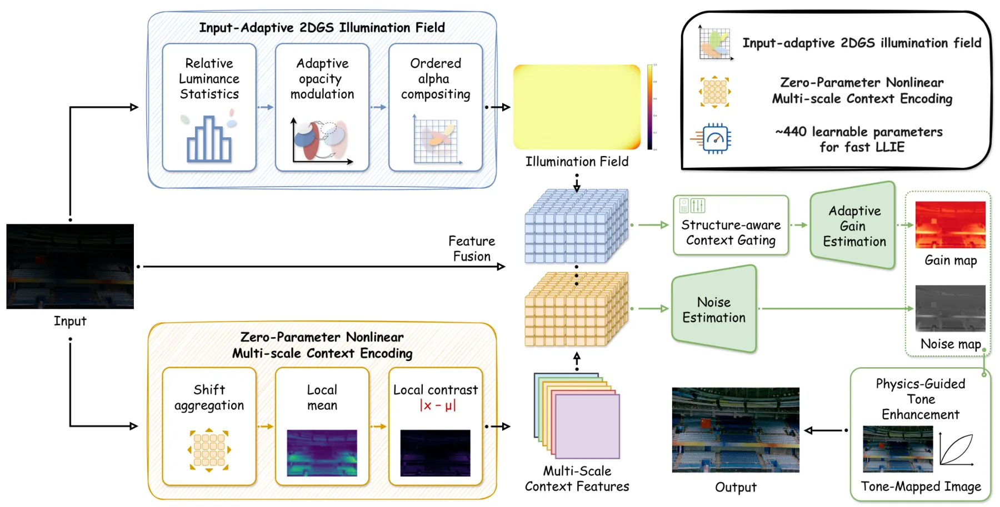
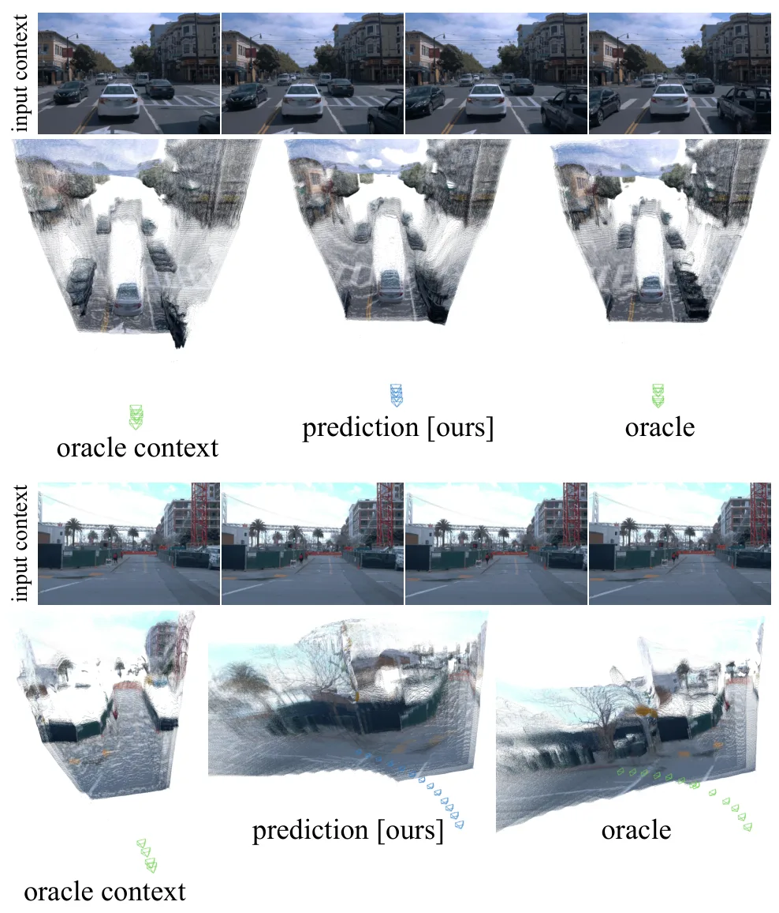
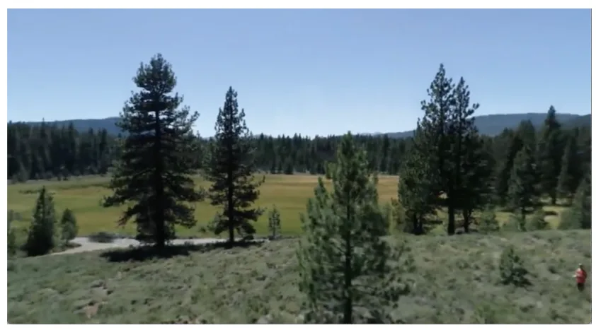

新论文 · 日期 2026-06-16 · score 15 · cs.RO
作者：Bingbing Zhang, Huan Yin, Yang Xu, Shuo Liu
评分 9.2/10
雷达 SLAMHilbert MappingRao-Blackwellized PF连续占据地图不确定度
一句话工作总结：RICH-SLAM 用粒子滤波后端和 Hilbert 空间降秩 GP，把稀疏雷达量测转成连续、带不确定度的占据地图。
雷达传感器因对恶劣天气和光照条件具有天然鲁棒性，越来越适合机器人 SLAM；但雷达量测相比 LiDAR 和视觉更稀疏、噪声更强，使得构建稠密、连续且一致的地图很困难。RICH-SLAM 提出一个雷达 SLAM 框架：后端采用 Rao-Blackwellized particle filter，以粒子滤波估计位姿、以 Kalman filtering 更新地图；地图端采用增量 Hilbert 空间降秩 Gaussia…
Simultaneous localization and mapping using radar sensors has gained increasing attention due to radar's inherent robustness to adverse weather and lighting conditions. However, radar measurements are characte…
新论文 · 日期 2026-06-16 · score 13 · cs.CV
作者：Guo Pu, Yixuan Han, Haofeng Li, Yao Zhang
评分 9/10
3D Gaussian Splatting单目在线重建Sim(3) 优化回环闭合UAV 重建
一句话工作总结：MoonSplat 把单目在线 3DGS 与 Sim(3) 全局优化/回环闭合结合，用 voxelized 3DGS 和颜色残差学习提升长序列重建稳定性。
单目图像序列在线三维重建仍然困难。3D Gaussian Splatting 具备高质量实时渲染能力，但现有在线 3DGS 方法常受相机位姿估计脆弱、缺少全局优化以及大规模长序列优化效率低的限制。MoonSplat 提出一种鲁棒高效的在线 voxelized 3DGS 重建框架，并集成全局 Sim(3) 优化，使相机跟踪更可靠，同时支持相机位姿和 voxelized 3DGS 的全局回环闭合。为加快 voxeliz…
Online 3D reconstruction from monocular image sequences is a challenging and ongoing research topic. 3D Gaussian Splatting (3DGS), leveraging its high-quality real-time rendering capability, empowers online 3D…

新论文 · 日期 2026-06-16 · score 11 · cs.CV, cs.AI, cs.CG, cs.GR
作者：Hui Wang, Xiaowei Li, Chenxin Zhang, Yifan Feng
评分 5.5/10
医学三维重建MRI迭代优化可变形形状网格质量
一句话工作总结：该工作用深度网络预测全局器官形态，再用迭代优化细化表面与网格，是医学场景的高质量三维几何重建方法。
从 MRI 构建患者特异的盆腔器官三维几何，对盆底建模和个体化分析很重要，但高保真、高质量几何重建仍然耗费人工且缺少标准流程。本文提出一个混合可变形形状建模框架，用于膀胱、子宫和直肠重建，结合深度学习预测与迭代优化。框架包含三部分：保持拓扑一致性的 geometry-aware multi-level 深度架构；平衡全局形状捕获和局部表面细化的两阶段 amortized optimization 训练策略；以及训练…
Patient-specific 3D reconstruction of pelvic organ geometry from MRI is important for pelvic floor modeling and downstream patient-specific analysis. However, while previous studies have focused primarily on e…

新论文 · 日期 2026-06-16 · score 10 · cs.CV
作者：Yuhan Chen, Kunyang Huang, Fuchen Li, Zhuohan Qin
评分 4.8/10
低光增强2D Gaussian Splatting照明场轻量网络视觉预处理
一句话工作总结：AIGS-Net 用输入自适应 2D Gaussian basis 表示照明补偿场，以极少参数完成快速低光增强。
现有低光图像增强方法常在照明场表示能力和计算复杂度之间受限。AIGS-Net 提出一个超轻量低光增强架构，用输入自适应 2D Gaussian Splatting 构建照明场。与静态先验不同，Gaussian basis 的 opacity 由输入图像相对亮度统计动态调制，并通过有序 alpha compositing 渲染空间变化的照明补偿。为高效引导自适应照明补偿，方法引入零参数非线性多尺度上下文编码模块，从低…
Existing low-light image enhancement methods often face a bottleneck between the representation capacity of illumination-field modeling and computational complexity. To address this issue, this paper proposes…

新论文 · 日期 2026-06-17 · score 9 · cs.CV
作者：Nils Morbitzer, Jonathan Evers, Artem Savkin, Thomas Stauner
评分 7.7/10
动态三维重建World ModelEgo-motion 解耦单目预测自动驾驶
一句话工作总结：FR3D 用持久 3D latent 表示预测未来动态场景，并显式把 ego-motion 与世界动态解耦，以减少 2D world model 的几何不一致。
预测动态环境演化对自主智能体很重要。近期生成式 world model 在 2D 视频合成上取得高真实感，但常把自车运动和环境动态混在图像平面内，导致长时域中出现物体形变或消失等物理不一致。FR3D 提出一个预测未来动态三维重建持久 3D latent 表示的世界模型。与把世界看作图像特征序列的方法不同，FR3D 显式解耦场景三维演化和智能体轨迹，把推断出的 ego-motion 当作 latent action…
Forecasting the evolution of dynamic environments is crucial for autonomous agents. While generative world models have recently achieved high photorealism in 2D video synthesis by mixing ego-motion and environ…

新论文 · 日期 2026-06-17 · score 9 · cs.CV
作者：Marissa Ramirez de Chanlatte, Arjun Rewari, Trevor Darrell, Derek J. N. Young
评分 6.1/10
UAV 测绘森林三维重建SfMNeRF地理空间数据
一句话工作总结：该工作讨论用 NeRF/神经三维重建改进 UAV 森林树图，目标是替代或增强传统 SfM 生成的低成本林业三维地图。
Open Forest Observatory 致力于让生态学家、土地管理者和公众都能使用低成本森林测绘数据，构建地理空间森林数据库和 UAV 森林测绘开源工具。当前 OFO 森林地图数据库中的三维树图主要由经典 Structure-from-Motion 技术生成，但这种方法容易产生伪影、细节不足，并且对林下区域尤其困难，因为 overhead imagery 对森林地面可见性有限。重建误差可能传播到野火仿真等下…
The Open Forest Observatory (OFO) is a collaboration across universities and other partners to make low-cost forest mapping accessible to ecologists, land managers, and the general public. The OFO is building…

新论文 · 日期 2026-06-16 · score 6 · cs.CV
作者：Yuhan Chen, Wenxuan Yu, Guofa Li, Fuchen Li
评分 4.5/10
低光增强Gaussian Light FieldVision Transformer物理先验图像恢复
一句话工作总结：GLFS 把各向异性 Gaussian basis 照明先验注入 ViT 注意力，用于无监督低光增强和颜色/结构约束。
复杂非均匀照明下，无监督低光增强方法常出现局部曝光不均和颜色失真，许多 Vision Transformer 也缺少显式建模照明退化物理先验的机制。GLFS 提出一种 Gaussian light field splatting-based Vision Transformer，把 Gaussian splatting 的连续物理照明建模引入 Transformer 架构。方法用各向异性 Gaussian basi…
Existing unsupervised low-light image enhancement methods often encounter local exposure imbalance and color distortion under complex non-uniform illumination. In addition, most Vision Transformers lack an exp…
新论文 · 日期 2026-06-16 · score 6 · cs.CV
作者：Fangyi Li, Xiaoyuan Yang, Yixiao Li, Zongyang Sui
评分 5.4/10
遥感Pansharpening2D Gaussian Splatting连续表示任意尺度
一句话工作总结：GSPan 用连续 2D Gaussian primitives 表示多光谱残差细节，使遥感 pansharpening 支持任意尺度渲染和高效大场景推理。
Pansharpening 旨在融合低分辨率多光谱图像和全色图像，生成高分辨率多光谱图像。多数深度学习方法把 pansharpening 看作固定网格预测，限制了尺度适应性。GSPan 将 2D Gaussian Splatting 引入 pansharpening，不直接预测像素，而是把各波段残差细节表示成连续可学习的 2D Gaussian primitives。作者设计 Dual-Stream Hierarc…
Pansharpening aims to generate high-resolution multispectral (HRMS) images by fusing low-resolution multispectral (LRMS) and panchromatic (PAN) observations. Most existing deep learning methods treat pansharpe…